ยินดีต้อนรับเข้าสู่คู่มือการใช้งานระบบ Moodle สำหรับผู้จัดการหลักสูตร
คู่มือฉบับนี้จัดทำขึ้นเพื่อแนะนำวิธีการใช้งานระบบ Moodle สำหรับผู้สร้างรายวิชา (Course Creator) เพื่อให้สามารถสร้าง จัดการ และดูแลรายวิชาภายในระบบ
การเข้าสู่ระบบ (Login)
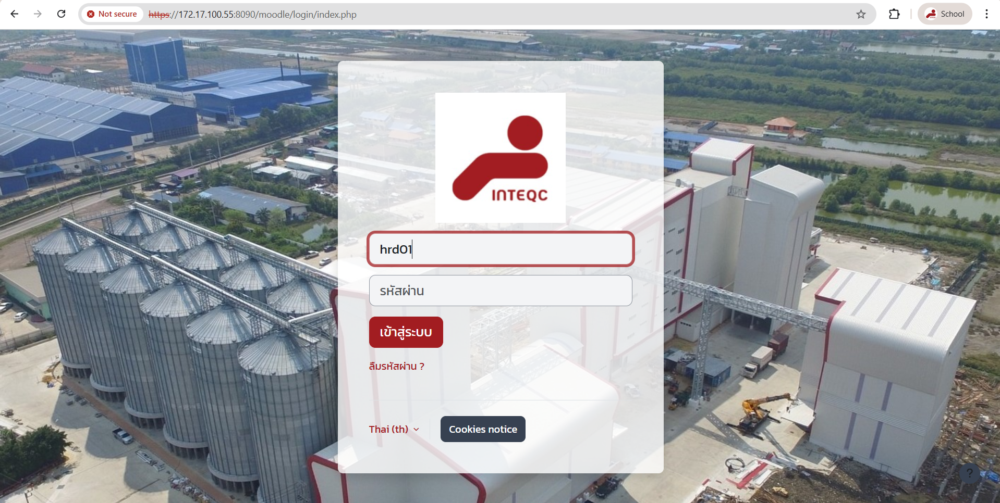
ภาพรวมหน้าจอ Moodle
หลังจากเข้าสู่ระบบสำเร็จ ท่านจะเห็นเมนูหลักด้านบน (Navigation Bar) พร้อมหน้าจอต่างๆ ดังนี้:
🔔 แถบด้านบนขวา
| ไอคอน | ชื่อ | คำอธิบาย |
|---|---|---|
| 🔔 | Notifications | การแจ้งเตือน — งานส่ง, Forum ตอบ, ข้อความจากระบบ |
| 💬 | Messages | ข้อความส่วนตัว — ส่งข้อความหา Student/Teacher ได้ |
| 👤 | User menu | โปรไฟล์, Preferences, Grades, Calendar, Log out |
📊 Dashboard — แดชบอร์ด
หน้าสรุปภาพรวมส่วนตัวของท่าน:
- Timeline: แสดง Deadline ที่กำลังจะมาถึง (Assignment , Quiz )
- Recently accessed courses: รายวิชาที่เข้าล่าสุด เข้าถึงได้เร็ว
- Calendar: ปฏิทินแสดงกำหนดการและเหตุการณ์ต่างๆ
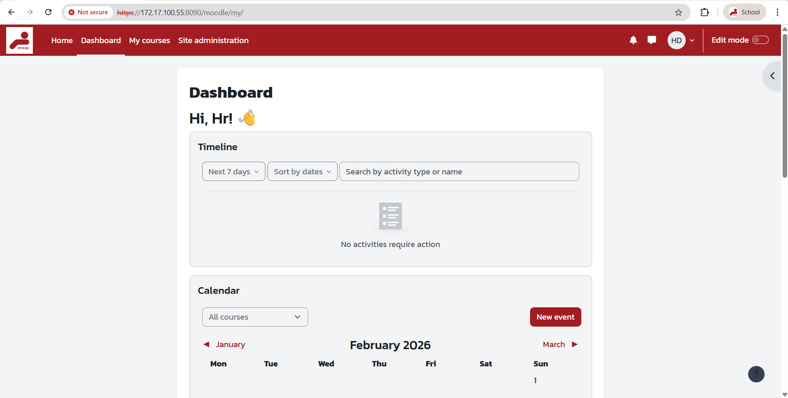
🏠 Home — หน้าแรก
หน้าแรกของ Moodle แสดงข้อมูลต้อนรับ, ประกาศ, และเนื้อหาที่กำหนดไว้ เช่น Banner รูปภาพ หรือข่าวสาร เป็นจุดเริ่มต้นหลักของระบบ
- แสดง Banner หรือข้อมูลต้อนรับขององค์กร
- สามารถเข้าถึงเมนูอื่นๆ ได้จาก Navigation Bar ด้านบน
- แสดง Course overview หรือ Available courses ที่ถูกตั้งค่าไว้
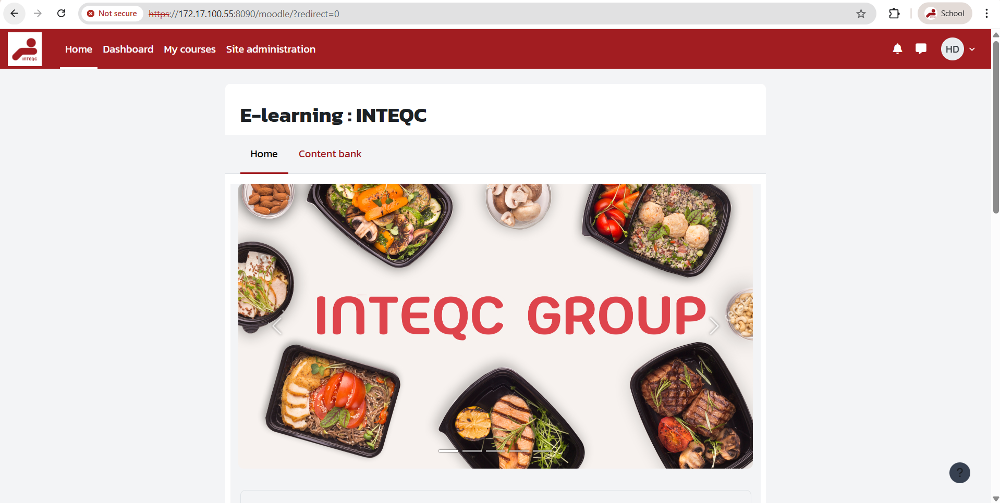
📁 Content bank
คลังเก็บเนื้อหาที่สร้างไว้ เช่น H5P content สามารถนำไปใช้ซ้ำในหลายรายวิชาได้
- เข้าถึงได้จากแท็บ Content bank ในหน้า Home (ดูรูป)
- สร้าง, แก้ไข, และจัดการ H5P activities
- ใช้ร่วมกับ Activity H5P ในรายวิชา
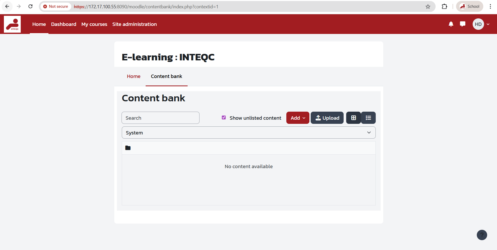
📚 My courses — รายวิชาของฉัน
แสดงรายวิชาทั้งหมดที่ท่านมีส่วนเกี่ยวข้อง:
- แสดงเป็น Card view หรือ List view (สลับได้)
- กรองตามสถานะ: All / In progress / Past / Starred
- ค้นหารายวิชาจากชื่อ
- คลิกที่ชื่อรายวิชาเพื่อเข้าไปจัดการเนื้อหา
- คลิกที่ create course เพื่อเข้าสู่หน้าการสร้างหลักสูตร
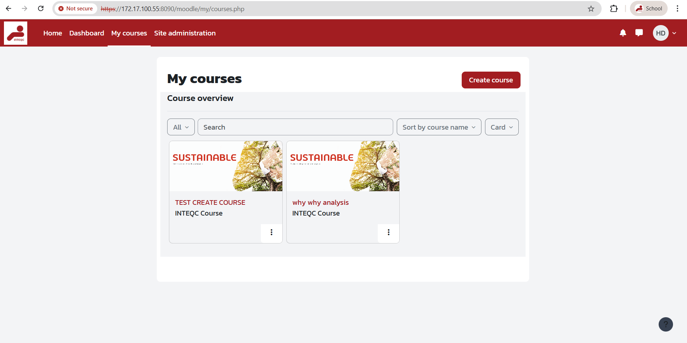
⚙️ Site administration — การจัดการระบบ
เมนูสำหรับ Admin และ Course Creator (บางส่วน):
| เมนู | คำอธิบาย | |
|---|---|---|
| Courses > Manage courses and categories | สร้าง/จัดการรายวิชาและหมวดหมู่ | ✅ ใช้ได้ |
| Courses > Add a new course | สร้างรายวิชาใหม่โดยตรง | ✅ ใช้ได้ |
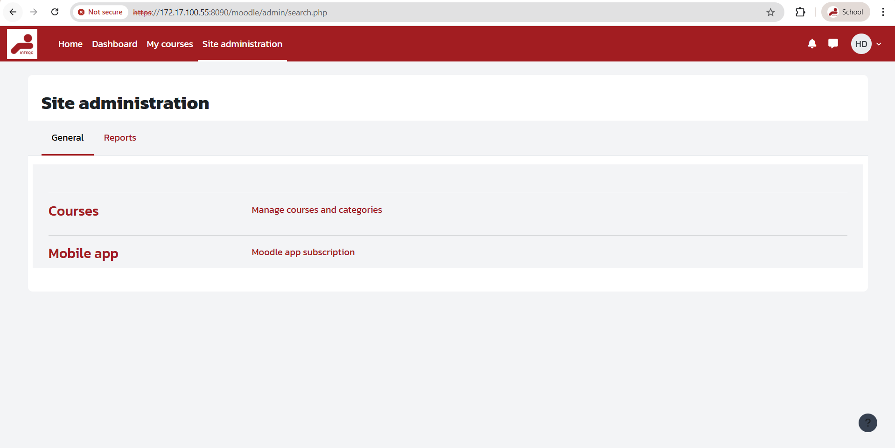
บทที่ 1: สร้างรายวิชาใหม่
ขั้นตอนการสร้างรายวิชา
ข้อมูลที่ต้องกรอก
| Field | คำอธิบาย | ตัวอย่าง | บังคับ? |
|---|---|---|---|
| Course full name | ชื่อเต็มของรายวิชา | การเขียนโปรแกรมเบื้องต้น | บังคับ |
| Course short name | ชื่อย่อ (unique) | PROG101 | บังคับ |
| Course category | หมวดหมู่ | วิทยาการคอมพิวเตอร์ | บังคับ |
| Start date | วันเริ่มรายวิชา | 1 มีนาคม 2026 | บังคับ |
| Course summary | คำอธิบายรายวิชา | รายวิชาสอนพื้นฐาน... | ไม่บังคับ |
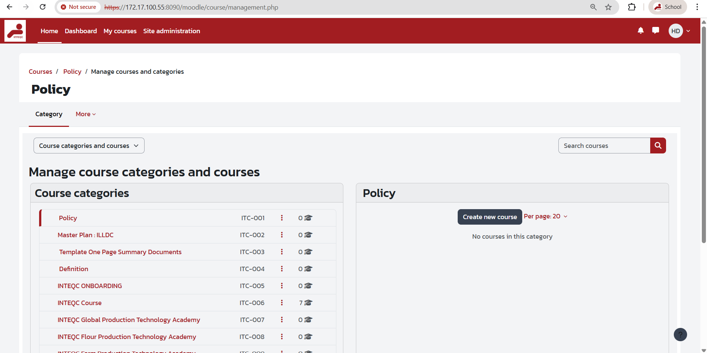
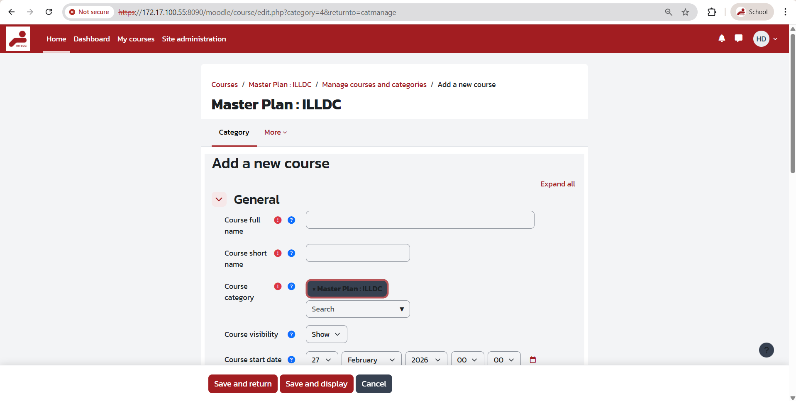
ตั้งค่ารายวิชา (Course Settings)
Course Format
| Format | คำอธิบาย | เหมาะกับ |
|---|---|---|
| Topics | แบ่งเนื้อหาเป็นหัวข้อ | เรียนตามหัวข้อ |
| Weekly | แบ่งเนื้อหาเป็นสัปดาห์ | มีกำหนดเวลาชัดเจน |
| Single activity | Activity เดียว เช่น SCORM | สอบ / e-learning |
วิธีเปลี่ยน Settings
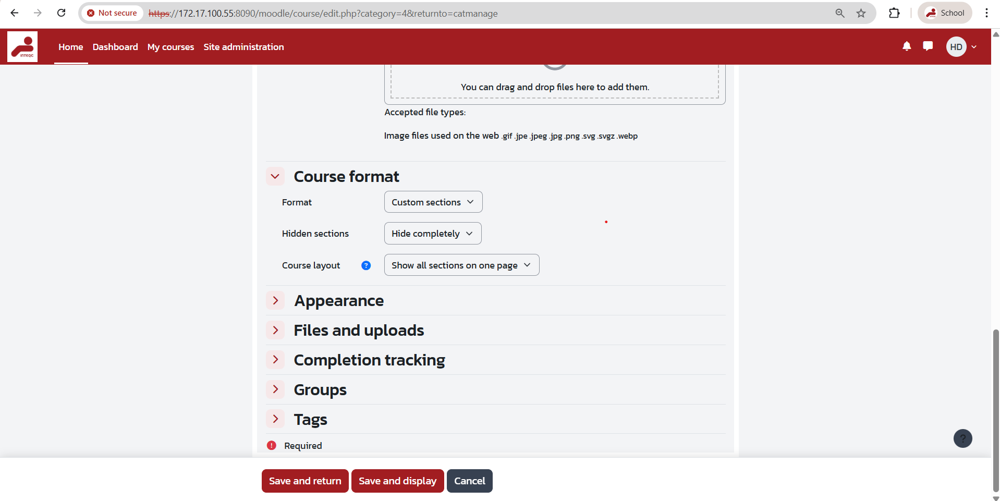
เพิ่มเนื้อหา (Resources)
| Resource | คำอธิบาย | ใช้งาน |
|---|---|---|
| File | อัปโหลดไฟล์ PDF, Word, PPT | แจกเอกสาร |
| Page | สร้างหน้าเว็บในรายวิชา | เนื้อหาออนไลน์ |
| URL | ลิงก์เว็บไซต์ภายนอก | วิดีโอ, แหล่งอ้างอิง |
| Folder | รวมไฟล์หลายไฟล์ | จัดกลุ่มเอกสาร |
| Book | เนื้อหาแบบหนังสือหลายบท | เนื้อหายาว |
| Label | ข้อความแทรกในหน้า Course | คำอธิบาย, หัวข้อย่อย |
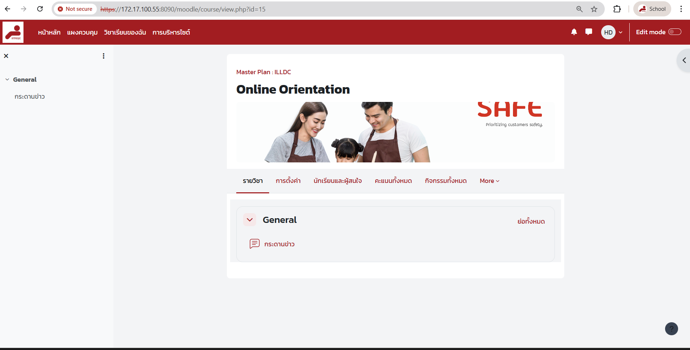
สร้างกิจกรรม (Activities)
Moodle มีกิจกรรมหลากหลายประเภทให้เลือกใช้ แบ่งตามวัตถุประสงค์ดังนี้:
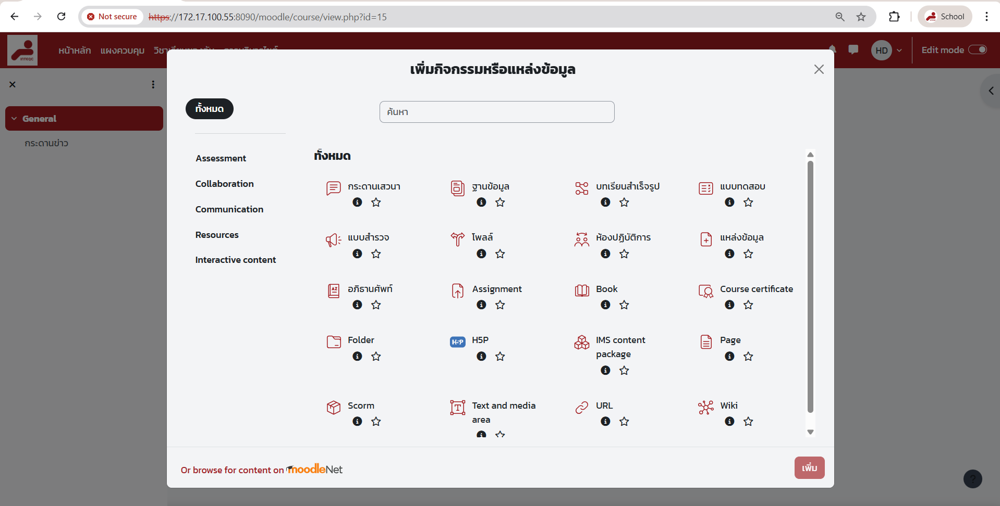
📝 กลุ่มงานมอบหมายและทดสอบ
| Activity | คำอธิบาย | เหมาะกับ |
|---|---|---|
| Assignment | ให้ผู้เรียนส่งงาน (ไฟล์, ข้อความออนไลน์, วิดีโอ) | การบ้าน, รายงาน, โปรเจค, Portfolio |
| Quiz | สร้างแบบทดสอบอัตโนมัติจาก Question Bank | สอบ, แบบฝึกหัด, Pre/Post test, แบบประเมิน |
| Workshop | การประเมินโดยเพื่อน (Peer Assessment) พร้อม Rubric | ให้นักเรียนตรวจและให้คะแนนงานกันเอง |
💬 กลุ่มสื่อสารและอภิปราย
| Activity | คำอธิบาย | เหมาะกับ |
|---|---|---|
| Forum | กระดานสนทนาแบบ Thread (มีหลายรูปแบบ) | อภิปราย, ถาม-ตอบ, ประกาศ, แลกเปลี่ยนความคิด |
| Chat | ห้องสนทนาแบบ Real-time (ข้อความสั้น) | ถาม-ตอบสด, Office hours, พูดคุยกลุ่ม |
| BigBlueButton | ห้องเรียนออนไลน์ (Video conference) ใน Moodle | สอนสด, ประชุมกลุ่ม, บันทึกการบรรยาย |
📖 กลุ่มเนื้อหาและบทเรียน
| Activity | คำอธิบาย | เหมาะกับ |
|---|---|---|
| Lesson | บทเรียนแบบแยกเส้นทาง (Branching) ตอบคำถามก่อนไปขั้นถัดไป | เนื้อหาที่ต้องทำความเข้าใจก่อน, Self-paced learning |
| SCORM package | เนื้อหา e-learning มาตรฐาน SCORM/AICC | Import เนื้อหาจากซอฟต์แวร์ Authoring เช่น Articulate, iSpring |
| H5P | เนื้อหาแบบ Interactive (วิดีโอ, แบบฝึก, Timeline, Flashcard) | สื่อการสอนแบบโต้ตอบ, Interactive video |
| External tool (LTI) | เชื่อมต่อเครื่องมือภายนอกผ่านมาตรฐาน LTI | Turnitin, Padlet, Kahoot, เครื่องมือ Third-party |
📊 กลุ่มรวบรวมข้อมูลและสำรวจ
| Activity | คำอธิบาย | เหมาะกับ |
|---|---|---|
| Choice | โพลถามความคิดเห็น (เลือก 1 ตัวเลือก) | โหวต, สำรวจความเห็น, เลือกกลุ่ม, นับจำนวน |
| Feedback | แบบสอบถามเต็มรูปแบบ (ไม่มีคะแนน) | แบบประเมินรายวิชา, แบบสำรวจ, แบบสอบถามความพึงพอใจ |
| Survey | แบบสำรวจสำเร็จรูป (COLLES/ATTLS) | วิจัยทัศนคติผู้เรียน, ประเมินบรรยากาศการเรียน |
| Database | สร้างฐานข้อมูลร่วมกัน (กำหนด Fields เอง) | เก็บข้อมูลแบบมีโครงสร้าง, Portfolio, รวมทรัพยากร |
📚 กลุ่มสร้างเนื้อหาร่วมกัน
| Activity | คำอธิบาย | เหมาะกับ |
|---|---|---|
| Glossary | พจนานุกรมคำศัพท์ (ผู้เรียนเพิ่มคำได้) | รวมคำศัพท์ประจำวิชา, FAQ, คลังคำ |
| Wiki | สร้างเนื้อหาร่วมกันแบบ Wiki | โปรเจคกลุ่ม, สรุปเนื้อหาร่วม, เขียนร่วมกัน |
📝 ช่องกรอกข้อมูลที่ทุก Activity ต้องมี (General)
เมื่อสร้าง Activity ทุกประเภท Moodle จะแสดงหมวด General เป็นอันดับแรก ต้องกรอกข้อมูลดังนี้:
| ช่อง | คำอธิบาย | บังคับ |
|---|---|---|
| Activity name | ชื่อที่แสดงในหน้ารายวิชา เช่น "แบบทดสอบบทที่ 1" หรือ "ส่งงาน Assignment 1" | ✅ ต้องกรอก |
| Description | คำอธิบายรายละเอียด คำชี้แจง หรือโจทย์ (รองรับรูปภาพ, วิดีโอ, ลิงก์) | แนะนำ |
| Display description on course page | แสดง Description ในหน้ารายวิชาโดยไม่ต้องคลิกเข้าไป | ตามต้องการ |
- Common module settings: กำหนด Group mode (No groups / Separate / Visible) และ Grouping
- Restrict access: เพิ่มเงื่อนไขการเข้าถึง (ดูรายละเอียดในหัวข้อ Restrict Access)
- Activity completion: ตั้งเงื่อนไขการสำเร็จ (ดูรายละเอียดในหัวข้อ Completion Tracking)
- Tags: เพิ่มแท็กเพื่อค้นหาง่าย
📝การสร้าง Assignment
ตั้งค่า Assignment
| หมวด | Setting | คำอธิบาย |
|---|---|---|
| General | Assignment name | ชื่องาน เช่น "ส่งรายงานบทที่ 1" (✅ บังคับ) |
| Description | โจทย์งาน, คำชี้แจง, เกณฑ์การให้คะแนน | |
| Availability | Allow submissions from | วันเริ่มส่งงานได้ |
| Due date | กำหนดส่ง (แสดงใน Calendar) | |
| Cut-off date | วันสุดท้ายที่ส่งได้ หลัง Due date ส่งสายได้ถึงวันนี้ | |
| Submission types | File submissions | อัปโหลดไฟล์ (กำหนดจำนวนและขนาดสูงสุดได้) |
| Online text | พิมพ์ตอบในช่องข้อความ | |
| Max files | จำนวนไฟล์สูงสุดต่อ 1 submission (1-20) | |
| Max submission size | ขนาดไฟล์สูงสุด (เช่น 50MB, 100MB) | |
| Feedback types | Feedback comments | เขียน comment ให้ผู้เรียน |
| Feedback files | อัปโหลดไฟล์ feedback (เช่น ไฟล์ที่ markup แล้ว) | |
| Offline grading worksheet | ดาวน์โหลด worksheet ตรวจ offline แล้ว import กลับ | |
| Submission settings | Require students click submit | ผู้เรียนต้องกด Submit เอง (ไม่ใช่ auto-submit) |
| Attempts reopened | อนุญาตให้ส่งใหม่ (Never / Manually / Until pass) | |
| Grade | Maximum grade | คะแนนเต็ม (เช่น 100), เลือก Scale หรือ Point |
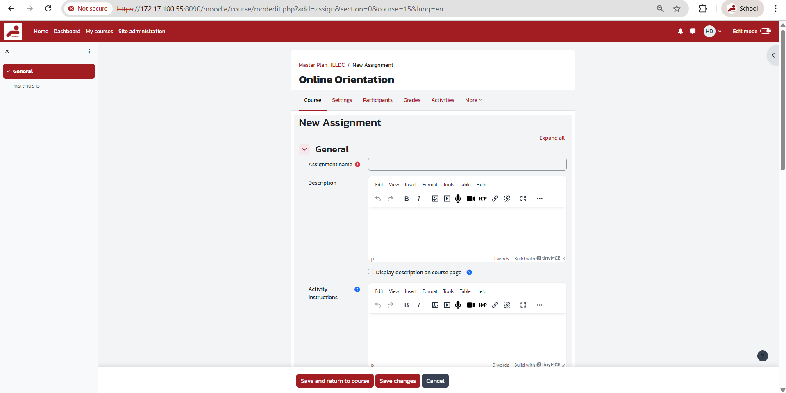
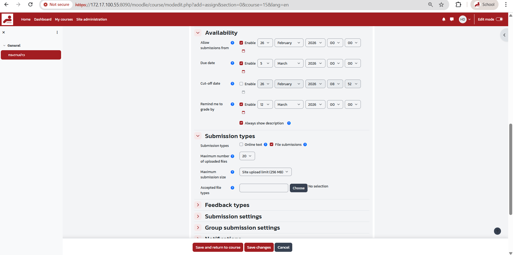
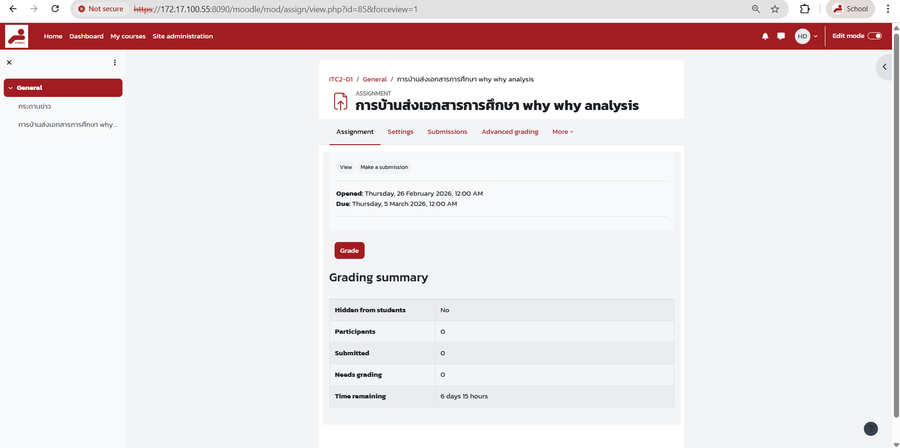
📝 การสร้าง Quiz
ตั้งค่า Quiz
| หมวด | Setting | คำอธิบาย |
|---|---|---|
| General | Quiz name | ชื่อแบบทดสอบ เช่น "สอบกลางภาค" (✅ บังคับ) |
| Description | คำชี้แจงการทำ Quiz, กฎข้อบังคับ | |
| Timing | Open / Close the quiz | วันเริ่ม-สิ้นสุดการทำ Quiz |
| Time limit | เวลาจำกัด (เช่น 30 นาที, 1 ชั่วโมง) | |
| When time expires | เมื่อหมดเวลา: ส่งอัตโนมัติ / ให้เวลาเพิ่ม / ยกเลิก | |
| Grade | Attempts allowed | จำนวนครั้งที่ทำได้ (1 ครั้ง / ไม่จำกัด) |
| Grading method | Highest / Average / First / Last attempt | |
| Layout | New page | แสดงกี่ข้อต่อหน้า |
| Navigation method | Free (ย้อนกลับได้) / Sequential (ข้อเดียวทีละข้อ) | |
| Shuffle questions | สลับลำดับข้อสอบ | |
| Question behaviour | Shuffle within questions | สลับตัวเลือกในแต่ละข้อ |
| How questions behave | Deferred feedback / Interactive / Immediate feedback | |
| Each attempt builds on last | Attempt ใหม่เริ่มจากคำตอบเดิม | |
| Review options | During the attempt | เห็นอะไรระหว่างทำ |
| Immediately after | เห็นอะไรหลังส่งทันที | |
| Later, while still open | เห็นอะไรระหว่าง Quiz ยังเปิด | |
| After the quiz is closed | เห็นอะไรหลังปิด Quiz | |
| Extra restrictions | Require password | ต้องกรอกรหัสก่อนเข้าทำ Quiz |

Question Bank — คลังคำถาม
ประเภทคำถามทั้งหมด
| ประเภท | คำอธิบาย | ตรวจอัตโนมัติ |
|---|---|---|
| Multiple choice | เลือกตอบ (1 หรือหลายข้อ) | ✅ |
| True/False | ถูก/ผิด | ✅ |
| Short answer | ตอบสั้น (ตรวจตาม keyword) | ✅ |
| Numerical | ตอบเป็นตัวเลข (กำหนดค่า tolerance ได้) | ✅ |
| Matching | จับคู่ซ้าย-ขวา | ✅ |
| Drag and drop | ลากวางลงช่องที่ถูกต้อง | ✅ |
| Select missing words | เลือกเติมคำในช่องว่าง | ✅ |
| Calculated | คำนวณจากสูตร (ค่าตัวแปรสุ่ม) | ✅ |
| Essay | เขียนตอบยาว (อัปโหลดไฟล์ได้) | ตรวจเอง |
| Description | ข้อความอธิบาย (ไม่มีคำถาม) ใช้แทรกคำชี้แจง | — |

💬 Forum
ประเภท Forum
| ประเภท | คำอธิบาย | เหมาะกับ |
|---|---|---|
| Standard forum | ทุกคนสร้าง topic ใหม่ได้ | อภิปรายทั่วไป |
| Single simple discussion | มี topic เดียว ทุกคนตอบใน thread เดียว | คำถามเฉพาะ 1 หัวข้อ |
| Each person posts one | แต่ละคนสร้าง topic ได้ 1 ครั้ง | ให้ทุกคนนำเสนอความเห็น |
| Q and A forum | ต้องตอบก่อนจึงเห็นคำตอบคนอื่น | ป้องกันการลอกคำตอบ |
| Standard blog-like | แสดงแบบ Blog | เขียน Blog ส่วนตัว |
ตั้งค่า Forum
- Subscription mode: Optional / Forced / Auto / Disabled
- Read tracking: เปิดให้ผู้เรียนเห็นว่าโพสต์ไหนยังไม่ได้อ่าน
- Post threshold: กำหนดจำนวนโพสต์ขั้นต่ำ / สูงสุด
- Whole forum grading: ให้คะแนน Forum ทั้งอัน (ดูจากจำนวน/คุณภาพโพสต์)
- Rating: ให้คะแนนแต่ละโพสต์ (Teacher หรือ Student ให้ Rating ได้)

🎮 H5P
H5P (HTML5 Package) สร้างเนื้อหาแบบ Interactive ได้หลายรูปแบบ:
| Content Type | คำอธิบาย |
|---|---|
| Interactive Video | วิดีโอที่แทรกคำถาม, ลิงก์, ป้อนข้อมูลระหว่างดู |
| Course Presentation | สไลด์แบบ Interactive พร้อมคำถามในแต่ละหน้า |
| Branching Scenario | เนื้อหาแบบเลือกเส้นทาง (เหมือน Choose Your Own Adventure) |
| Flashcards | บัตรคำถาม-คำตอบ สำหรับท่องจำ |
| Timeline | แสดงเหตุการณ์ตามลำดับเวลา |
| Drag and Drop | ลากวางรูปภาพ/ข้อความไปยังตำแหน่งที่ถูกต้อง |
| Fill in the Blanks | เติมคำในช่องว่าง |
| Column | รวม H5P หลายตัวเข้าด้วยกันในหน้าเดียว |

📦 SCORM
- Number of attempts: จำนวนครั้งที่เข้าเรียนได้
- Grading method: Highest / Average / First / Last / Sum
- Force new attempt: บังคับเริ่มใหม่ทุกครั้ง
- Display package: แสดงใน Current window / New window / Popup
- Auto-continue: เปิดบทถัดไปอัตโนมัติ

📊 Feedback
สร้างแบบสอบถาม/แบบประเมินที่ ไม่มีคะแนน (ต่างจาก Quiz)
ประเภทคำถามใน Feedback
| ประเภท | คำอธิบาย |
|---|---|
| Multiple choice | เลือกตอบ (1 หรือหลายข้อ) แสดงเป็น Radio / Checkbox / Dropdown |
| Multiple choice (rated) | เลือกตอบพร้อมค่าคะแนน (สำหรับวิเคราะห์) |
| Short text answer | ตอบข้อความสั้น |
| Longer text answer | ตอบข้อความยาว (Textarea) |
| Numeric answer | ตอบเป็นตัวเลข |
| Information | แสดง Label หรือ Page break |
- Anonymous: ตั้งให้ตอบแบบไม่ระบุตัวตน
- Multiple submissions: อนุญาตให้ตอบหลายครั้ง
- Analysis: ดูผลรวมแบบกราฟและตาราง

🔄 Workshop
Workshop มี 4 ขั้นตอน (Phases):
1. Setup
ตั้งค่าและ Rubric
2. Submission
ผู้เรียนส่งงาน
3. Assessment
ผู้เรียนตรวจงานกัน
4. Grading
คำนวณคะแนนรวม
- Grading strategy: Accumulative / Comments / Rubric / Number of errors
- Number of reviews: กำหนดจำนวนงานที่แต่ละคนต้องตรวจ (เช่น 3 ชิ้น)
- Submission grade + Assessment grade: ได้คะแนนทั้งจากงานที่ส่ง และ คุณภาพการตรวจ

📋 Choice

บทที่ 2: ลงทะเบียนผู้เรียน (Enrollment)
หลังจากสร้างรายวิชาแล้ว ขั้นตอนต่อไปคือการเพิ่มผู้เรียนเข้ามาในรายวิชา Moodle รองรับหลายวิธีดังนี้:
| Method | คำอธิบาย | เหมาะกับ | ตั้งค่าที่ |
|---|---|---|---|
| Manual | เพิ่มผู้เรียนด้วยมือทีละคน | กลุ่มเล็ก (1-30 คน) | Participants > Enrol users |
| Self enrolment | ผู้เรียนสมัครเอง (ใส่รหัสลงทะเบียน) | เปิดให้ลงทะเบียนเอง | Enrolment methods > Self enrolment |
| Guest | เข้าดูเนื้อหาได้โดยไม่ต้อง Enrol | Preview / เนื้อหาเปิดสาธารณะ | Enrolment methods > Guest access |
| Cohort sync | ลงทะเบียนอัตโนมัติตามกลุ่ม Cohort | องค์กรขนาดใหญ่ ลงทะเบียนทีเดียว | Enrolment methods > Cohort sync |
Manual Enrolment — เพิ่มผู้เรียนด้วยมือ
Roles ที่กำหนดได้ในรายวิชา
| Role | สิทธิ์ |
|---|---|
| Student | เข้าเรียน, ส่งงาน, ทำ Quiz, ดูคะแนนตัวเอง |
| Non-editing teacher | ดูเนื้อหา, ตรวจงาน, ให้คะแนน (แก้ไขเนื้อหาไม่ได้) |
| Teacher (Editing) | แก้ไขเนื้อหา, เพิ่ม Activity, จัดการทุกอย่างในรายวิชา |
Self Enrolment — ให้ผู้เรียนลงทะเบียนเอง
- Enrolment key: รหัสลงทะเบียน (แจกให้ผู้เรียนเท่านั้น)
- Max enrolled users: จำกัดจำนวนผู้เรียน
- Enrolment duration: ระยะเวลาที่เข้าเรียนได้ (เช่น 180 วัน)
- Start/End date: ช่วงเวลาที่เปิดให้ลงทะเบียน
จัดการ Groups
Groups Mode
| Mode | คำอธิบาย |
|---|---|
| No groups | ไม่แยก Group — ทุกคนเห็นเหมือนกัน |
| Separate groups | แต่ละ Group เห็นเฉพาะข้อมูลของ Group ตัวเอง |
| Visible groups | เห็นทุก Group แต่ลงข้อมูลได้เฉพาะ Group ตัวเอง |
Groupings — จัดกลุ่มของกลุ่ม
Grouping คือการรวมหลาย Group เข้าด้วยกัน เพื่อกำหนด Activity ให้ Grouping เฉพาะ:
Restrict Access — การจำกัดการเข้าถึง
กำหนดเงื่อนไขว่าผู้เรียนต้องทำอะไรก่อนจึงจะเข้าถึง Activity หรือ Section ได้
ประเภท Conditions
| Condition | คำอธิบาย | ตัวอย่าง |
|---|---|---|
| Activity completion | ต้องทำ Activity อื่นเสร็จก่อน | ต้องทำ Quiz 1 ก่อนเข้า Quiz 2 |
| Date | เปิดให้เข้าถึงตามวันที่กำหนด | เปิดใน Week 3 เป็นต้นไป |
| Grade | ต้องได้คะแนนขั้นต่ำจาก Activity อื่น | ต้องได้ Quiz 1 ≥ 60% |
| Group | จำกัดเฉพาะ Group ที่กำหนด | เฉพาะ Group A เท่านั้น |
| User profile | ตามข้อมูลโปรไฟล์ผู้ใช้ | เฉพาะ Department = Engineering |
วิธีตั้ง Restrict Access
ตัวอย่างการรวม Conditions
- บทที่ 1: เปิดให้ทุกคนเข้า
- Quiz บทที่ 1: ต้องดูเนื้อหาบทที่ 1 ก่อน (Activity completion)
- บทที่ 2: ต้องได้ Quiz บทที่ 1 ≥ 60% (Grade condition)
- Final Exam: ต้องทำ Quiz ทุกบทเสร็จ (หลาย Activity completion)
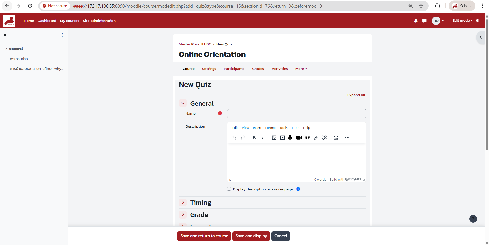
บทที่ 3: Gradebook — การจัดการคะแนน
Gradebook เป็นระบบจัดการคะแนนกลางของ Moodle ทุก Activity ที่มีคะแนนจะส่งคะแนนมาที่นี่อัตโนมัติ
การเข้าถึง Gradebook
Gradebook Views
| View | คำอธิบาย | ใช้ทำอะไร |
|---|---|---|
| Grader report | ตารางคะแนนทุกคน (แก้ไขได้) | ดูภาพรวม, ให้คะแนนด้วย Quick grading |
| User report | คะแนนรายคน | ดูคะแนนเฉพาะผู้เรียน 1 คน |
| Grade history | ประวัติการเปลี่ยนแปลงคะแนน | ตรวจสอบว่าใครแก้คะแนนเมื่อไร |
| Gradebook setup | โครงสร้างหมวดคะแนนและน้ำหนัก | สร้าง Category, ตั้ง Weight, Aggregation |
การให้คะแนน Assignment
Grade Categories & Weights
ตัวอย่างสัดส่วนคะแนน
| หมวด | น้ำหนัก | Activities |
|---|---|---|
| การบ้าน | 20% | Assignment 1-5 |
| แบบฝึกหัด | 10% | Quiz 1-4 |
| สอบกลางภาค | 30% | Midterm Quiz |
| สอบปลายภาค | 40% | Final Quiz |
Grade Letters
| เกรด | ต่ำสุด (%) | สูงสุด (%) |
|---|---|---|
| A | 80 | 100 |
| B+ | 75 | 79.99 |
| B | 70 | 74.99 |
| C+ | 65 | 69.99 |
| C | 60 | 64.99 |
| D+ | 55 | 59.99 |
| D | 50 | 54.99 |
| F | 0 | 49.99 |
Export คะแนน
Quick Grading — ให้คะแนนเร็ว
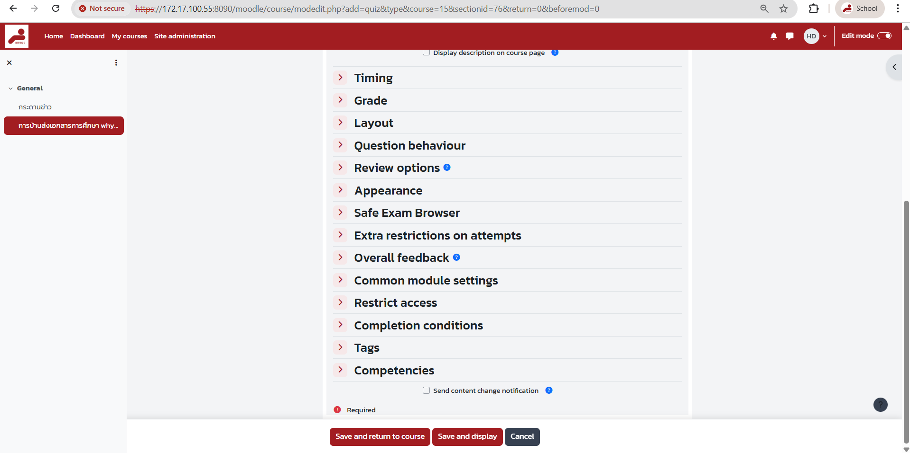
Completion Tracking — การติดตามความก้าวหน้า
1. เปิด Completion ในรายวิชา
2. ตั้งเงื่อนไข Completion ในแต่ละ Activity
| Option | คำอธิบาย |
|---|---|
| Do not indicate | ไม่ติดตาม |
| Students can manually mark | ผู้เรียนทำเครื่องหมายเอง |
| Show as complete when conditions are met | สำเร็จอัตโนมัติเมื่อตรงเงื่อนไข |
เงื่อนไข Completion ที่ตั้งได้
- View: ต้องเข้าดู Activity
- Submit: ต้องส่งงาน (Assignment)
- Receive a grade: ต้องได้รับคะแนน
- Receive a passing grade: ต้องได้คะแนนผ่านเกณฑ์
- All attempts completed: ต้องทำครบทุกรอบ (Quiz)
3. ดูรายงาน Activity Completion
4. Course Completion — ติดตามการสำเร็จรายวิชา
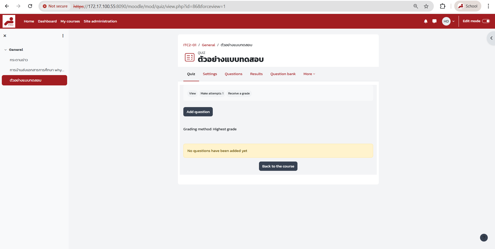
Reports — การรายงานผล
| รายงาน | เส้นทาง | ข้อมูลที่แสดง |
|---|---|---|
| Logs | Reports > Logs | ประวัติการเข้าใช้งานทั้งหมด |
| Live logs | Reports > Live logs | การใช้งาน real-time (เหมาะดูระหว่างสอบ) |
| Activity report | Reports > Activity report | จำนวนครั้งที่เข้าถึง Activity |
| Course participation | Reports > Course participation | การมีส่วนร่วมแยกราย Activity |
| Activity completion | Reports > Activity completion | สถานะการทำกิจกรรมของทุกคน |
| Course completion | Reports > Course completion | สถานะการสำเร็จรายวิชา |
Quiz Statistics
เข้า Quiz > Results > Statistics เพื่อดู:
- คะแนนเฉลี่ย, สูงสุด, ต่ำสุด
- ค่า Discrimination index ของแต่ละข้อ
- ค่า Facility index (ง่าย-ยาก)
- กราฟการกระจายคะแนน
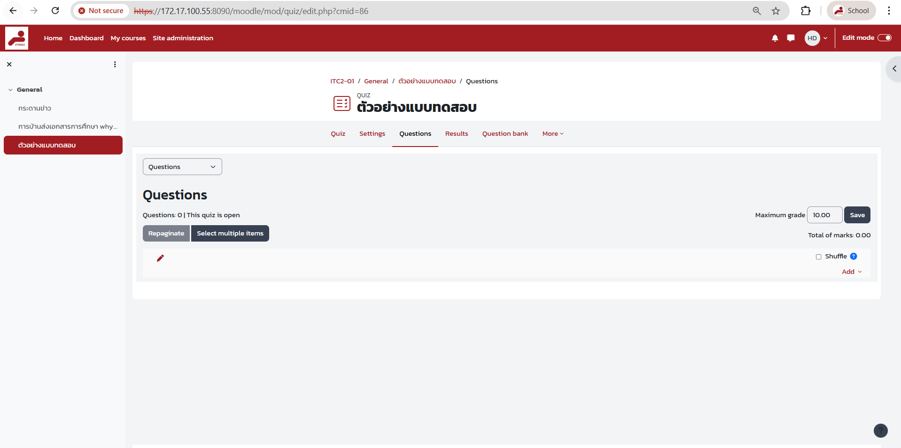
Backup & Restore — สำรองและกู้คืน
Backup รายวิชา
Restore รายวิชา
Reset Course — ล้างข้อมูลผู้เรียน
ใช้เมื่อต้องการใช้รายวิชาซ้ำในภาคเรียนใหม่ โดยไม่ลบเนื้อหาและ Activity:
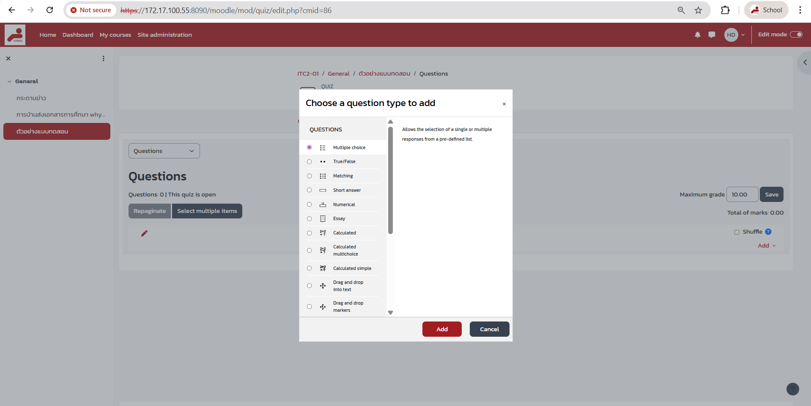
FAQ — คำถามที่พบบ่อย
| ปัญหา | วิธีแก้ไข |
|---|---|
| สร้างรายวิชาไม่ได้ | ตรวจสอบว่าได้รับ Role "Course Creator" แล้ว ติดต่อ Admin |
| นักเรียนเข้ารายวิชาไม่ได้ | ตรวจสอบ Enrolment methods เปิดอยู่ วันที่ enrolment ยังไม่หมด |
| ไฟล์อัปโหลดไม่ได้ | ตรวจสอบขนาดไฟล์ (ปกติ 50-100MB) และประเภทที่อนุญาต |
| Quiz ไม่แสดงคำถาม | ตรวจสอบว่าเพิ่มคำถามเข้า Quiz แล้ว (Edit quiz > Add) |
| คะแนนไม่แสดงใน Gradebook | ตรวจสอบ Activity มีการตั้งค่า Grade ไว้หรือไม่ |
| นักเรียนมองไม่เห็น Activity | ตรวจสอบ Visibility (ไอคอนตา) และ Restrict access conditions |
| เวลา Quiz ไม่ตรง | ตรวจสอบ Timezone ของระบบและผู้ใช้ให้ตรงกัน |
| Completion ไม่แสดง | ตรวจสอบ Enable completion tracking ใน Course settings และตั้งค่าในแต่ละ Activity |
| Backup ไฟล์ใหญ่เกินไป | เลือกไม่รวม User data เพื่อลดขนาด หรือ Backup เฉพาะ Activity ที่ต้องการ |
| Reset รายวิชาไม่ได้ | ใช้ Course administration > Reset แทนการลบมือ |